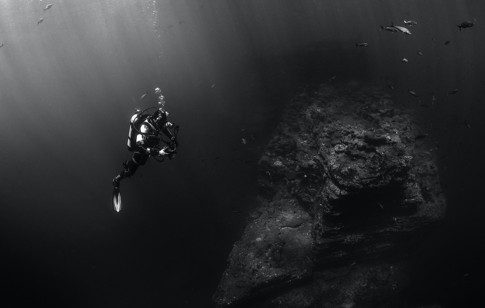
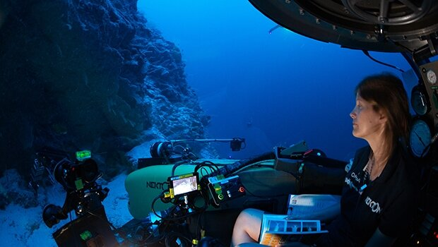

About the sea
The Marine Diaries: Discovering the Value of the Invaluable Deep Sea
by Bridget Hott

It can be hard to imagine that an ecosystem so far away, so unknown, so alien that we know more about
the other planets than we do about it, would have any sort of influence and impact on our daily
lives. The deep sea begins 200 metres below the surface of the open ocean and extends to depths that
most of us can’t even fathom. Regardless of how distant we find ourselves from the sea, the deep
ocean plays a huge part in keeping the Earth habitable for all of its lifeforms.
At the very forefront of the importance of deep-sea ecosystems lies the intrinsic nature of exploring
the depths of the ocean. Doing so requires the highest levels of innovation and design in technology,
engineering, and scientific methods and analysis. The exploration of an environment so different from
everything we know requires constant development and imaginative solutions to questions we don’t even
know to ask. Many developments made in deep-sea exploration have assisted in the development of
technology and equipment needed to explore outer space and other planets. Life forms found in the
deepest, harshest parts of the ocean have supplemented our understanding of where life on Earth came
from and what possibilities lie in the stars above. From the obvious scientific value of the deep-sea,
to the less obvious cultural importance, let’s take a dive and explore the untapped potential of the
great unknown.
Of all the different geographical features of the deep sea, arguably the most well-known are
hydrothermal vents. Upon first discovery, it was unthinkable that life could exist under such immense
pressure and extremely high temperatures, but it was here that scientists discovered a new domain of
life, Archaea, bringing us a step closer to understanding our origin story. Hydrothermal vent habitats
have also led to many advances in the pharmaceutical realm through utilizing the unique adaptations life
has developed to survive under such conditions. The biochemistry of the organisms that allows them to
thrive at these depths has provided beneficial knowledge to the development of many life-saving drugs.
To date, there are four anti-cancer drugs on the market and one antiviral for neuropathic pain that have
been derived from deep-sea organisms

Deep water canyons and seamounts impact water movement as well as the currents that regulate climates
around the world. Both of these geographical features help regulate the temperatures of surrounding
waters by allowing cold and warm waters to mix and nutrients to stir-up. This leads to high levels of
biodiversity and biomass, creating habitats suitable for many of our most commercially fished species.
The deep valleys of canyons suspend nutrient particles in mid-water, allowing for blooms of plankton and
krill to accumulate, attracting schools of tuna, sharks, and whales. Meanwhile, seamounts disrupt
nutrient-rich currents, deflecting them towards the surface, creating upwelling and a hotspot for
feeding in an otherwise barren sea.
The deep-sea also acts as the Earth’s largest carbon sink. Throughout the entirety of the ocean there
exists a mechanism that scientists refer to as a “biological pump.” Made entirely of living organisms,
this pump moves carbon from the surface of the ocean into the deep-sea, separating it over prolonged
periods of time and ultimately reducing the impact of anthropogenic carbon release. It is also the site
of microbial oxidation of methane, another extremely potent greenhouse gas that contributes
significantly to global warming. Without this pump in action, the effects of climate change would
already be shattering and the earth would likely be uninhabitable.

On a rather exciting front, scientists are working side by side with energy corporations to understand
the dynamics and mechanics of deep-sea environments before rushing into extraction of valuable minerals,
making the deep-sea one of the most researched ecosystems prior to its exploitation. The human
population is expected to grow by another 2 billion people over the next 30 years, pushing industries to
search every corner of the earth for useful materials, thus putting a large strain on the earth’s
mineral deposits - of which the deep-sea is a huge source Heavy metals such as nickel, manganese,
cobalt, and copper are required to uphold economic development and clean energy infrastructure, and all
of these metals have been found in the form of nodules, or rock-like clusters, loose on the seafloor.
With a carefully formed plan-of-action, focused on conserving this valuable natural habitat while also
benefiting from the resource deposits, deep-sea mining has the potential to carve the path for a new way
of life and thousands of new jobs and research opportunities.
For many policy makers, the value of an ecosystem is nothing without a price tag. A recent study by the
UN looked at the economic value of the deep-sea environment. It was calculated that the deep-sea has a
market value of up to $USD 423 billion per year, when the incurred social cost of carbon sequestration
is taken into account. This estimate comes from the many streams of economic importance the ocean
harbors, some of which we’ve discussed here, such as: supporting surface level fisheries as well as
deep-water fish stocks, harvesting corals for the jewelry trade, extracting valuable minerals from the
seafloor, mitigation of carbon emissions and climate change, scientific research and education,
pharmaceutical development from marine organisms, and tourist and recreational activities. Needless to
say, without the deep-sea the world would be a very different, almost unrecognizable place, and we owe a
huge thanks to the ocean for supplying us with the life we know and love.